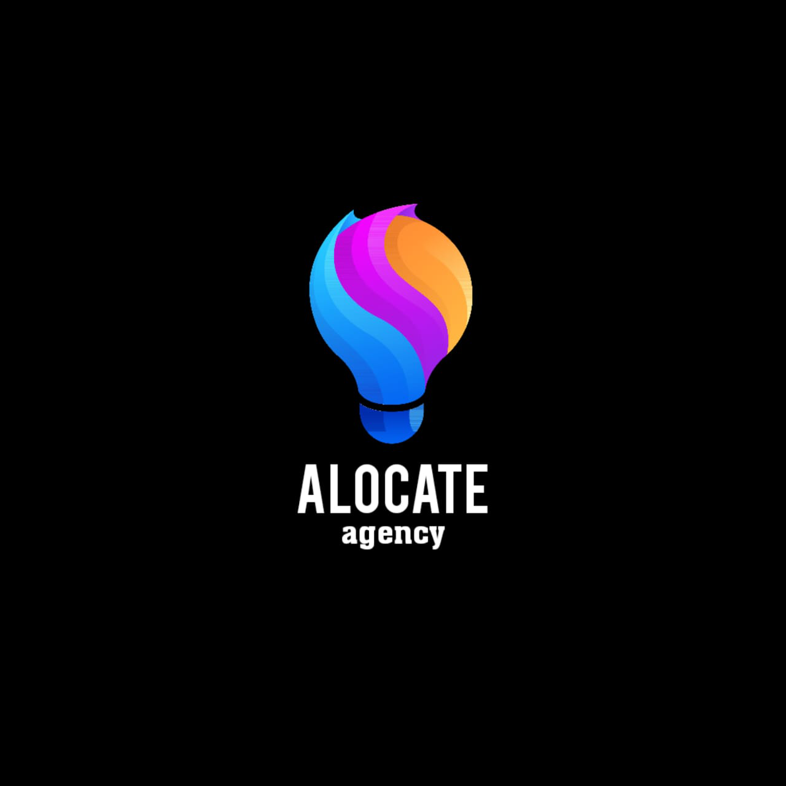

ALOCATE
Public Relation
agency
ALOCATE adalah agensi Public Relations dan Komunikasi yang berfokus pada membangun hubungan harmonis antara brand dengan audiensnya. Kami hadir untuk membantu brand menyampaikan pesan secara jernih, transparan, dan bermakna, sehingga dapat meningkatkan kepercayaan publik dan memperkuat citra perusahaan. Dengan strategi komunikasi yang terintegrasi, riset tren, serta pendekatan kreatif, ALOCATE mendukung berbagai kebutuhan mulai dari media relations, manajemen krisis, kampanye digital, hingga pelatihan komunikasi. Kami percaya bahwa komunikasi yang efektif adalah kunci utama dalam membangun reputasi dan pertumbuhan bisnis yang berkelanjutan.

“Your Brand, Our Playground”